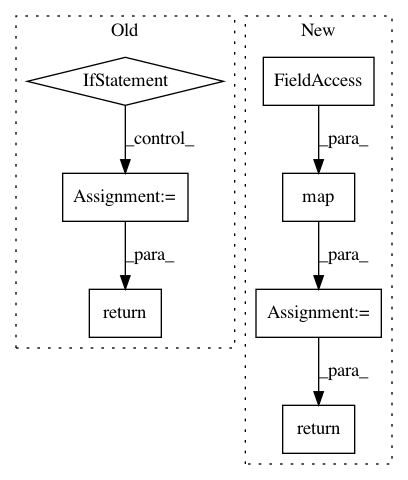

d7a7dd6fe7106f6501e9995a92153f65238bbb47,tensorflow_transform/analyzers.py,QuantilesCombiner,extract_output,#QuantilesCombiner#Any#,1347
Before Change
buckets = self._get_buckets_callable(summary)
if not self._include_max_and_min:
// If always_return_num_quantiles is set to True, the number of elements in
// buckets is always equal to num_quantiles + 1. Hence we trim the min and
// max quantile boundaries to return the internal boundaries.
if self._always_return_num_quantiles:
buckets = buckets[1:-1]
// If always_return_num_quantiles is set to False, the approximate quantile
// library can return less or more than requested number of quantiles.
// The max value can be same as the last internal boundary, due to removal
// of duplicates. Below, the min and/or max quantile boundaries are trimmed
// depending on the actual boundaries returned by the library.
elif buckets.size >= (self._num_quantiles + 1):
// Trim min/max.
buckets = buckets[1:-1]
elif buckets.size == self._num_quantiles:
buckets = buckets[1:]
else:
// Do not trim min/max, these are part of requested boundaries.
pass
return [buckets]
def output_tensor_infos(self):
return [
analyzer_nodes.TensorInfo(
After Change
return buckets
if not self._include_max_and_min:
bucket_lists = list(map(prune_buckets, bucket_lists))
return [np.reshape(np.stack(bucket_lists, axis=0), output_shape)]
def output_tensor_infos(self):
return [
analyzer_nodes.TensorInfo(
In pattern: SUPERPATTERN
Frequency: 3
Non-data size: 7
Instances
Project Name: tensorflow/transform
Commit Name: d7a7dd6fe7106f6501e9995a92153f65238bbb47
Time: 2019-06-21
Author: tf-transform-dev@google.com
File Name: tensorflow_transform/analyzers.py
Class Name: QuantilesCombiner
Method Name: extract_output
Project Name: tensorflow/tpu
Commit Name: 9de6656a779e73ac61995bd87044af21b3f37951
Time: 2018-04-19
Author: frankchn@google.com
File Name: models/experimental/amoeba_net/amoeba_net_model.py
Class Name: InputPipeline
Method Name: input_fn
Project Name: tensorflow/models
Commit Name: 54a5a577d06acce4d13aa8d564c85e8d57ac00e7
Time: 2018-09-29
Author: joelshor@google.com
File Name: research/gan/cyclegan/data_provider.py
Class Name:
Method Name: _provide_custom_dataset